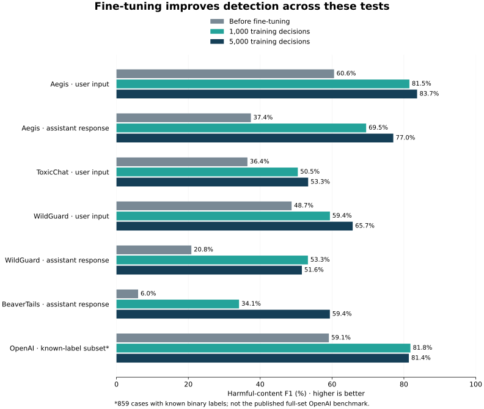
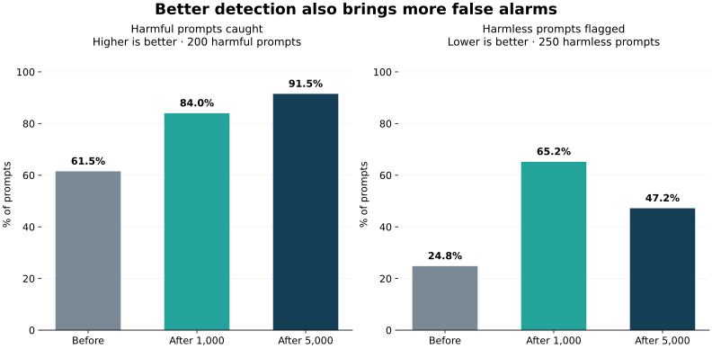

Can fine-tuned Laya moderate chat?
We compare two sizes of safety training data for a small local model, then measure what it learns and whether that learning carries over to other datasets.
27 of 27 dataset/model evaluations are complete. Published competitor scores are references, not new model runs.
Better detection came with more false alarms. On XSTest, the base model flagged 62/250 harmless prompts (24.8%) and caught 123/200 harmful prompts (61.5%). After 1,000 training decisions, it flagged 163/250 harmless prompts (65.2%) and caught 168/200 harmful prompts (84.0%). After 5,000 training decisions, it flagged 118/250 harmless prompts (47.2%) and caught 183/200 harmful prompts (91.5%). These false alarms would affect people asking harmless questions; the results do not establish readiness for unattended moderation.
Both fine-tuned models improved on the base model for Aegis user inputs and assistant responses. All four improvements are supported by the 98.75% uncertainty ranges. Aegis is also the source of the training data; these tests use held-out examples.
The 5,000-decision model had higher harmful-content F1 than the base model on 5 of the five transfer tasks. That score alone does not establish reliable moderation: catching more harmful content can come with more false alarms on benign requests.
More training data did not improve every score. The 5,000-decision model scored slightly below the 1,000-decision model on WildGuard assistant response and OpenAI known-label subset. The 95% uncertainty ranges include no difference, so these results do not establish a decline.
What changed with fine-tuning?
Each fine-tune starts from the same Laya base. One uses 1,000 labelled decisions; the other uses 5,000, including the smaller set. Half the decisions judge user input and half judge an assistant response in context. Test examples stay out of training.
The score below is harmful-content F1. It balances catching harmful content with avoiding false alarms. Higher is better. It is not accuracy, and it is not the macro-F1 used in our earlier workflow study.

{kind=link}
{kind=link}
| Test | Examples | Laya before | After 1,000 | After 5,000 |
|---|---|---|---|---|
| Aegis · user input Same source as training | 1928 | 60.6% | 81.5% | 83.7% |
| Aegis · assistant response Same source as training | 813 | 37.4% | 69.5% | 77.0% |
| ToxicChat · user input Transfer | 2853 | 36.4% | 50.5% | 53.3% |
| WildGuard · user input Transfer | 1699 | 48.7% | 59.4% | 65.7% |
| WildGuard · assistant response Transfer | 1709 | 20.8% | 53.3% | 51.6% |
| BeaverTails · assistant response Transfer | 3021 | 6.0% | 34.1% | 59.4% |
| OpenAI · known-label subset Transfer; adapted subset | 859 | 59.1% | 81.8% | 81.4% |
“Same source as training” uses separate Aegis test data. “Transfer” uses a different dataset. Input and response safety remain separate: a safe refusal can answer an unsafe request.
Does it block harmless requests?

{kind=link}
{kind=link}
XSTest includes 250 benign prompts that can look risky out of context, alongside 200 harmful contrasts. This check shows unnecessary flags on the benign prompts and how many harmful contrasts were caught.
| Model | Benign prompts flagged | 95% range for false alarms | Harmful prompts caught | Failed benign requests |
|---|---|---|---|---|
| Laya before | 62/250 (24.8%) | 19.9–30.5% | 123/200 | 0 |
| Laya · 1,000 decisions | 163/250 (65.2%) | 59.1–70.8% | 168/200 | 0 |
| Laya · 5,000 decisions | 118/250 (47.2%) | 41.1–53.4% | 183/200 | 0 |
A failed request is reported separately, not counted as a correct safe decision. This measures classification of prompts; it is not a response-refusal benchmark or proof of protection against attacks.
OpenAI labels need two separate views
The original 1,680 texts have incomplete category labels. Our main table uses the 859 texts with a known binary answer: at least one positive category, or all eight categories explicitly negative. The other 821 are not silently labelled safe.
We also ask separate category questions wherever an annotation exists. The table below summarizes those labelled text/category decisions. Several decisions can refer to the same text; they are not independent new texts.
| Model | Known category decisions | Harmful-content F1 |
|---|---|---|
| Laya before | 9298 | 23.1% |
| Laya · 1,000 decisions | 9298 | 24.6% |
| Laya · 5,000 decisions | 9298 | 25.8% |
Neither view reproduces the published full-set OpenAI moderation score. Unknown categories are omitted, and our policy wording is explicit.
Recall, false alarms and local response times
Recall shows how much labelled harmful content was caught. False alarms count benign content incorrectly flagged. Precision measures how often a harmful verdict was correct. Full confidence intervals and confusion counts are in the linked analysis.
| Test / model | Precision | Harmful examples caught | False alarms | Failed requests |
|---|---|---|---|---|
| Aegis · user input · Laya before | 67.3% | 572/1039 (55.1%) | 278/889 (31.3%) | 0 |
| Aegis · user input · Laya · 1,000 decisions | 78.2% | 885/1039 (85.2%) | 247/889 (27.8%) | 0 |
| Aegis · user input · Laya · 5,000 decisions | 82.8% | 879/1039 (84.6%) | 183/889 (20.6%) | 0 |
| Aegis · assistant response · Laya before | 69.2% | 101/394 (25.6%) | 45/419 (10.7%) | 0 |
| Aegis · assistant response · Laya · 1,000 decisions | 78.3% | 246/394 (62.4%) | 68/419 (16.2%) | 0 |
| Aegis · assistant response · Laya · 5,000 decisions | 81.8% | 287/394 (72.8%) | 64/419 (15.3%) | 0 |
| ToxicChat · user input · Laya before | 25.3% | 236/362 (65.2%) | 697/2491 (28.0%) | 0 |
| ToxicChat · user input · Laya · 1,000 decisions | 40.5% | 242/362 (66.9%) | 355/2491 (14.3%) | 0 |
| ToxicChat · user input · Laya · 5,000 decisions | 44.3% | 243/362 (67.1%) | 306/2491 (12.3%) | 0 |
| WildGuard · user input · Laya before | 70.4% | 281/754 (37.3%) | 118/945 (12.5%) | 0 |
| WildGuard · user input · Laya · 1,000 decisions | 69.1% | 393/754 (52.1%) | 176/945 (18.6%) | 0 |
| WildGuard · user input · Laya · 5,000 decisions | 77.6% | 430/754 (57.0%) | 124/945 (13.1%) | 0 |
| WildGuard · assistant response · Laya before | 21.7% | 57/284 (20.1%) | 206/1425 (14.5%) | 0 |
| WildGuard · assistant response · Laya · 1,000 decisions | 53.8% | 150/284 (52.8%) | 129/1425 (9.1%) | 0 |
| WildGuard · assistant response · Laya · 5,000 decisions | 59.7% | 129/284 (45.4%) | 87/1425 (6.1%) | 0 |
| BeaverTails · assistant response · Laya before | 58.5% | 55/1733 (3.2%) | 39/1288 (3.0%) | 0 |
| BeaverTails · assistant response · Laya · 1,000 decisions | 95.2% | 360/1733 (20.8%) | 18/1288 (1.4%) | 0 |
| BeaverTails · assistant response · Laya · 5,000 decisions | 92.8% | 757/1733 (43.7%) | 59/1288 (4.6%) | 0 |
| OpenAI · known-label subset · Laya before | 78.2% | 248/522 (47.5%) | 69/337 (20.5%) | 0 |
| OpenAI · known-label subset · Laya · 1,000 decisions | 76.2% | 461/522 (88.3%) | 144/337 (42.7%) | 0 |
| OpenAI · known-label subset · Laya · 5,000 decisions | 79.2% | 437/522 (83.7%) | 115/337 (34.1%) | 0 |
| OpenAI · supplied category labels · Laya before | 14.0% | 519/770 (67.4%) | 3199/8528 (37.5%) | 0 |
| OpenAI · supplied category labels · Laya · 1,000 decisions | 14.2% | 720/770 (93.5%) | 4355/8528 (51.1%) | 0 |
| OpenAI · supplied category labels · Laya · 5,000 decisions | 15.0% | 732/770 (95.1%) | 4164/8528 (48.8%) | 0 |
| XSTest · benign and harmful prompts · Laya before | 66.5% | 123/200 (61.5%) | 62/250 (24.8%) | 0 |
| XSTest · benign and harmful prompts · Laya · 1,000 decisions | 50.8% | 168/200 (84.0%) | 163/250 (65.2%) | 0 |
| XSTest · benign and harmful prompts · Laya · 5,000 decisions | 60.8% | 183/200 (91.5%) | 118/250 (47.2%) | 0 |
| Test / model | Accuracy | Median response | 95th percentile | Average precision |
|---|---|---|---|---|
| Aegis · user input · Laya before | 61.4% | 29 ms | 158 ms | 69.2% |
| Aegis · user input · Laya · 1,000 decisions | 79.2% | 28 ms | 69 ms | 86.9% |
| Aegis · user input · Laya · 5,000 decisions | 82.2% | 33 ms | 80 ms | 90.5% |
| Aegis · assistant response · Laya before | 58.4% | 56 ms | 255 ms | 63.2% |
| Aegis · assistant response · Laya · 1,000 decisions | 73.4% | 61 ms | 69 ms | 82.6% |
| Aegis · assistant response · Laya · 5,000 decisions | 79.0% | 60 ms | 63 ms | 88.2% |
| ToxicChat · user input · Laya before | 71.2% | 30 ms | 163 ms | 33.8% |
| ToxicChat · user input · Laya · 1,000 decisions | 83.4% | 41 ms | 77 ms | 48.8% |
| ToxicChat · user input · Laya · 5,000 decisions | 85.1% | 32 ms | 62 ms | 56.4% |
| WildGuard · user input · Laya before | 65.2% | 44 ms | 207 ms | 67.6% |
| WildGuard · user input · Laya · 1,000 decisions | 68.4% | 43 ms | 79 ms | 73.6% |
| WildGuard · user input · Laya · 5,000 decisions | 73.6% | 43 ms | 78 ms | 78.9% |
| WildGuard · assistant response · Laya before | 74.7% | 120 ms | 410 ms | 22.9% |
| WildGuard · assistant response · Laya · 1,000 decisions | 84.6% | 97 ms | 192 ms | 59.2% |
| WildGuard · assistant response · Laya · 5,000 decisions | 85.8% | 97 ms | 191 ms | 57.2% |
| BeaverTails · assistant response · Laya before | 43.2% | 43 ms | 214 ms | 63.1% |
| BeaverTails · assistant response · Laya · 1,000 decisions | 54.0% | 44 ms | 62 ms | 83.9% |
| BeaverTails · assistant response · Laya · 5,000 decisions | 65.7% | 43 ms | 61 ms | 88.0% |
| OpenAI · known-label subset · Laya before | 60.1% | 55 ms | 254 ms | 74.6% |
| OpenAI · known-label subset · Laya · 1,000 decisions | 76.1% | 60 ms | 131 ms | 84.7% |
| OpenAI · known-label subset · Laya · 5,000 decisions | 76.7% | 61 ms | 131 ms | 86.4% |
| OpenAI · supplied category labels · Laya before | 62.9% | 31 ms | 202 ms | 11.6% |
| OpenAI · supplied category labels · Laya · 1,000 decisions | 52.6% | 41 ms | 97 ms | 16.6% |
| OpenAI · supplied category labels · Laya · 5,000 decisions | 54.8% | 42 ms | 97 ms | 16.2% |
| XSTest · benign and harmful prompts · Laya before | 69.1% | 29 ms | 173 ms | 72.2% |
| XSTest · benign and harmful prompts · Laya · 1,000 decisions | 56.7% | 28 ms | 40 ms | 73.9% |
| XSTest · benign and harmful prompts · Laya · 5,000 decisions | 70.0% | 28 ms | 38 ms | 81.6% |
Timing comes from serial local calls after a warm-up on a shared workstation with other services running. It can vary with background load and is not a direct comparison with vendor latency. Average precision evaluates the ordering of unsafe probabilities across thresholds and uses only valid probability outputs; it is not a test-tuned operating threshold.
Uncertainty, category breakdown and long inputs
Each comparison resamples the same source prompts for both models, keeping repeated decisions together. Four primary Aegis comparisons use 98.75% intervals to account for testing both tasks at both training sizes. Transfer and 5,000-versus-1,000 comparisons use descriptive 95% intervals. A range crossing zero does not settle which model is better.
| Test | Comparison | F1 change, points | Uncertainty range, points | Confidence |
|---|---|---|---|---|
| Aegis · user input | Laya · 1,000 decisions vs Laya before | +21.0 | +17.8 to +24.2 | 98.75% |
| Aegis · user input | Laya · 5,000 decisions vs Laya before | +23.1 | +19.9 to +26.2 | 98.75% |
| Aegis · user input | Laya · 5,000 decisions vs Laya · 1,000 decisions | +2.1 | +0.8 to +3.4 | 95% |
| Aegis · assistant response | Laya · 1,000 decisions vs Laya before | +32.1 | +25.3 to +39.3 | 98.75% |
| Aegis · assistant response | Laya · 5,000 decisions vs Laya before | +39.6 | +32.3 to +47.1 | 98.75% |
| Aegis · assistant response | Laya · 5,000 decisions vs Laya · 1,000 decisions | +7.6 | +4.5 to +10.7 | 95% |
| ToxicChat · user input | Laya · 1,000 decisions vs Laya before | +14.0 | +10.8 to +17.1 | 95% |
| ToxicChat · user input | Laya · 5,000 decisions vs Laya before | +16.9 | +13.4 to +20.3 | 95% |
| ToxicChat · user input | Laya · 5,000 decisions vs Laya · 1,000 decisions | +2.9 | +0.3 to +5.4 | 95% |
| WildGuard · user input | Laya · 1,000 decisions vs Laya before | +10.7 | +7.4 to +13.9 | 95% |
| WildGuard · user input | Laya · 5,000 decisions vs Laya before | +17.0 | +13.4 to +20.4 | 95% |
| WildGuard · user input | Laya · 5,000 decisions vs Laya · 1,000 decisions | +6.3 | +4.1 to +8.6 | 95% |
| WildGuard · assistant response | Laya · 1,000 decisions vs Laya before | +32.4 | +27.2 to +37.5 | 95% |
| WildGuard · assistant response | Laya · 5,000 decisions vs Laya before | +30.8 | +25.2 to +36.1 | 95% |
| WildGuard · assistant response | Laya · 5,000 decisions vs Laya · 1,000 decisions | -1.7 | -6.2 to +2.8 | 95% |
| BeaverTails · assistant response | Laya · 1,000 decisions vs Laya before | +28.1 | +25.1 to +31.0 | 95% |
| BeaverTails · assistant response | Laya · 5,000 decisions vs Laya before | +53.4 | +50.5 to +56.1 | 95% |
| BeaverTails · assistant response | Laya · 5,000 decisions vs Laya · 1,000 decisions | +25.3 | +22.7 to +27.9 | 95% |
| OpenAI · known-label subset | Laya · 1,000 decisions vs Laya before | +22.7 | +18.7 to +26.7 | 95% |
| OpenAI · known-label subset | Laya · 5,000 decisions vs Laya before | +22.3 | +18.1 to +26.4 | 95% |
| OpenAI · known-label subset | Laya · 5,000 decisions vs Laya · 1,000 decisions | -0.4 | -2.3 to +1.3 | 95% |
| OpenAI · supplied category labels | Laya · 1,000 decisions vs Laya before | +1.5 | +0.4 to +2.7 | 95% |
| OpenAI · supplied category labels | Laya · 5,000 decisions vs Laya before | +2.7 | +1.5 to +4.0 | 95% |
| OpenAI · supplied category labels | Laya · 5,000 decisions vs Laya · 1,000 decisions | +1.2 | +0.7 to +1.7 | 95% |
| XSTest · benign and harmful prompts | Laya · 1,000 decisions vs Laya before | -0.6 | -5.7 to +4.4 | 95% |
| XSTest · benign and harmful prompts | Laya · 5,000 decisions vs Laya before | +9.2 | +3.9 to +14.5 | 95% |
| XSTest · benign and harmful prompts | Laya · 5,000 decisions vs Laya · 1,000 decisions | +9.8 | +6.5 to +13.1 | 95% |
Known OpenAI categories
| Category | Model | Decisions | Harmful F1 | Recall | False-positive rate |
|---|---|---|---|---|---|
| H | Laya before | 771 | 43.4% | 73.5% | 43.8% |
| H2 | Laya before | 761 | 11.3% | 58.5% | 49.7% |
| HR | Laya before | 1444 | 20.8% | 65.8% | 26.0% |
| S | Laya before | 984 | 43.7% | 78.9% | 57.8% |
| S3 | Laya before | 994 | 18.8% | 76.5% | 59.5% |
| SH | Laya before | 1447 | 5.7% | 27.5% | 30.8% |
| V | Laya before | 1450 | 18.4% | 53.2% | 29.4% |
| V2 | Laya before | 1447 | 4.4% | 41.7% | 29.3% |
| H | Laya · 1,000 decisions | 771 | 45.1% | 96.3% | 61.4% |
| H2 | Laya · 1,000 decisions | 761 | 14.6% | 100.0% | 66.5% |
| HR | Laya · 1,000 decisions | 1444 | 18.4% | 93.4% | 45.5% |
| S | Laya · 1,000 decisions | 984 | 47.1% | 97.9% | 69.2% |
| S3 | Laya · 1,000 decisions | 994 | 20.5% | 98.8% | 71.5% |
| SH | Laya · 1,000 decisions | 1447 | 10.6% | 68.6% | 41.0% |
| V | Laya · 1,000 decisions | 1450 | 22.6% | 90.4% | 42.3% |
| V2 | Laya · 1,000 decisions | 1447 | 5.3% | 66.7% | 39.8% |
| H | Laya · 5,000 decisions | 771 | 46.3% | 96.9% | 58.9% |
| H2 | Laya · 5,000 decisions | 761 | 14.9% | 100.0% | 65.0% |
| HR | Laya · 5,000 decisions | 1444 | 19.4% | 96.1% | 44.0% |
| S | Laya · 5,000 decisions | 984 | 49.9% | 98.7% | 62.5% |
| S3 | Laya · 5,000 decisions | 994 | 22.0% | 98.8% | 65.3% |
| SH | Laya · 5,000 decisions | 1447 | 13.2% | 82.4% | 38.8% |
| V | Laya · 5,000 decisions | 1450 | 23.0% | 90.4% | 41.3% |
| V2 | Laya · 5,000 decisions | 1447 | 5.2% | 66.7% | 40.2% |
Inputs longer than the model budget
All questions and answer choices fit. Eight WildGuard response inputs were shortened by the 2,048-token limit; the main scores keep them. The sensitivity view below excludes those inputs without changing training or the primary test. One training example in the smaller set and three in the larger set were also shortened.
| Test / model | Excluded | Retained | Full-test F1 | Unshortened-input F1 |
|---|---|---|---|---|
| WildGuard · assistant response · Laya before | 8 | 1701 | 20.8% | 20.4% |
| WildGuard · assistant response · Laya · 1,000 decisions | 8 | 1701 | 53.3% | 53.2% |
| WildGuard · assistant response · Laya · 5,000 decisions | 8 | 1701 | 51.6% | 51.8% |
The sensitivity subset has descriptive scores, not its own paired uncertainty interval. Original source content remains local.
Published safety models: context, not a leaderboard
These values were reported by the model authors. We did not run Shieldstral or safeguard, and differences in policies, labels, selected examples and scoring prevent a direct win/loss claim.
Mistral’s model-card evaluation
| Dataset | Task | Shieldstral 3B | Safeguard 20B |
|---|---|---|---|
| WildGuardTest | User input | 88.1% | 87.3% |
| ToxicChat | User input | 84.1% | 79.8% |
| Aegis v2 | User input | 86.2% | 84.4% |
| OpenAI Moderation | User input | 81.4% | 84.0% |
| WildGuardTest | Assistant response | 80.4% | 80.7% |
| BeaverTails | Assistant response | 85.0% | 83.8% |
| Aegis v2 | Assistant response | 87.2% | 75.2% |
Mistral source: F1 as published. Shieldstral uses a 0.5 threshold; safeguard uses high reasoning effort. Dataset-specific retained rows are not established as identical to ours. Published XSTest response/refusal scores are deliberately excluded from our benign-prompt comparison.
OpenAI’s separate evaluation
| Model | OpenAI moderation F1 | ToxicChat F1 |
|---|---|---|
| gpt-oss-safeguard-120b | 82.9% | 79.3% |
| gpt-oss-safeguard-20b | 82.9% | 79.9% |
OpenAI technical report, Table 2: different policy prompts and evaluation from Mistral’s column. Table 2 does not specify its F1 averaging or reasoning effort. Our known-label subset must not be compared as if it were that full-set task.
Training data, limitations and evidence
The 1,000 and 5,000 budgets count labelled decisions, not unique conversations. The labels preserve the dataset’s mixture of human judgments, a model jury and generated refusal data.
| Training decisions | Unique source prompts | Human labels | Model-jury labels | Refusal-augmentation labels |
|---|---|---|---|---|
| 1,000 | 986 | 684 | 216 | 100 |
| 5,000 | 4586 | 3422 | 1057 | 521 |
Both checkpoints start independently from the same pinned base, use three fixed epochs and one training seed, and keep the final checkpoint. A separate 400-decision development set comes from official validation data. No test-based model or threshold selection is used.
Two incomplete training attempts stopped because memory use and step times kept growing. Neither produced a checkpoint or any test results. The second attempt used masked padding to multiples of 128 tokens, but padding alone did not resolve the memory growth. The frozen data, token limit and learning settings stayed fixed. On 20 development examples, the padding check produced identical choices and probabilities; this checks those examples, not equivalence of entire training runs. See the restart record and padding check.
Training restarted with the same memory policy for both sizes: synchronize and release unused MPS cache after each optimizer step, with --mps-cache-clear-interval 1. In a three-batch training-only check, this reduced driver-allocated memory for the longest batch from 59.17 GB to 16.22 GB while live tensor memory stayed at 3.38 GB. This check addresses memory use; model quality is measured separately in the held-out results above.
Matching training content is removed using normalized hashes of both prompts and responses, including official test rows omitted from scoring and prior benchmark examples. This cannot rule out paraphrases or knowledge acquired during the base model’s original training.
One broad policy guides the generic tasks. Source datasets draw safety boundaries differently, so transfer results reflect those differences as well as model performance. One training seed does not tell us how stable a result is across repeated training. This study does not establish readiness for unattended moderation.
ToxicChat and BeaverTails have non-commercial terms; WildGuard requires authorized access. Dataset text and model weights are not published by this report.
Study protocol · Reference and source notes · Published reference values · Validated results · Independent data audit · Input-length audit
Reproduce the results
The repository includes training and evaluation code, pinned source versions, saved predictions, and verification tests. Start with the step-by-step reproduction guide. Rescoring the recorded predictions requires no GPU or paid model calls. Download gated datasets through their original publishers with your own access.